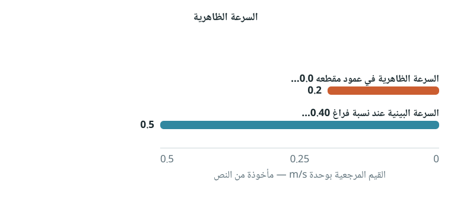

السرعة الظاهرية
Superficial velocity
سرعة تُحسب بقسمة معدل التدفق الحجمي على مساحة المقطع الكلية للعمود، لا على المساحة المتاحة للتدفق فعلاً، فتُعطي قيمة أقل من السرعة الحقيقية داخل الفراغات.
السرعة الظاهرية هي معدل التدفق الحجمي مقسوماً على مساحة المقطع الكلية للعمود، أي على المساحة الهندسية كما لو كان العمود فارغاً. وهي ليست السرعة التي يراها السائل بين الحبيبات، بل سرعة مرجعية تُبنى عليها معادلات الأوساط المسامية لأن مساحة المقطع الكلية هي الكمية التي تُقاس بمسطرة لا بتصوير داخلي. والعلاقة بينها وبين السرعة البينية هي نسبة الفراغية: السرعة البينية تساوي السرعة الظاهرية مقسومة على نسبة الفراغ، فتكون أكبر منها دائماً في وسط مسامي. ويُستعمل هذا التعريف في معادلة إرغون لانخفاض الضغط عبر الحشوات، وفي تحديد سرعة التمييع الدنيا، وفي حساب زمن المكوث الاسمي في المفاعلات ذات الحشو. والخطأ الشائع أن تُدخل السرعة الظاهرية في رقم رينولدز بقطر الحبيبة ثم تُقارن الناتج بحدود مأخوذة من سرعة بينية، فينتج حكم على نظام التدفق لا يطابق الواقع.
كيف تعمل الظاهرة؟
السرعة الظاهرية تفصل بين كميتين: ما يدخل العمود وما يجري بين الحبيبات. فمعدل التدفق الحجمي كمية محفوظة تُقاس عند المدخل، ومساحة المقطع الكلية كمية هندسية تُقاس بالمسطرة، فحاصل قسمتهما رقم مرجعي لا يعتمد على تفاصيل الحشوة. أما السائل فيرى مساحة أقل لأن الحبيبات تشغل جزءاً من المقطع، فيسرع في الممرات الضيقة بينها بمقدار مقلوب نسبة الفراغ. ولهذا تُكتب معادلات انخفاض الضغط بدلالة السرعة الظاهرية مع إدخال نسبة الفراغ صريحة في المعادلة، بدل أن تُخفى النسبة داخل سرعة محلية لا تُقاس.
العلاقة بالأرقام
u_s = Q/A وu_i = u_s/ε. في عمود مقطعه 0.02 m² وتدفق 0.004 m³/s تكون السرعة الظاهرية 0.20 m/s؛ وعند نسبة فراغ 0.40 تصبح السرعة البينية 0.50 m/s أي 2.5 ضعفاً. ويدخل هذا التعريف في معادلة إرغون لانخفاض الضغط عبر الحشوة، حيث يُضرب الحد اللزج بالسرعة الظاهرية والحد القصوري بمربعها، وتظهر نسبة الفراغ في المقام بأسس مختلفة في الحدين، فحساسية انخفاض الضغط لنسبة الفراغ أعلى في الحد القصوري منها في اللزج.
مفاهيم متقاربة
السرعة الظاهرية ليست السرعة الحقيقية للسائل، ولا متوسطاً صحيحاً لها؛ هي مرجع حسابي. وتُفصل عن السرعة البينية التي تُقاس على مساحة الفراغ، وعن سرعة التمييع الدنيا التي هي حدّ انتقالي يُقارن به الرقم المرجعي لا يُعرَّف به. وتُفصل كذلك عن سرعة الجسيمات في الطبقة المميعة، فالحبيبات تتحرك بسرعة أخرى تُقاس بالتصوير، وقد تكون صفراً في الحشو الثابت بينما السرعة الظاهرية موجبة.
حدود التطبيق
التعريف صالح حين تكون مساحة المقطع ثابتة ونسبة الفراغ موزعة بانتظام. وفي الأعمدة الواسعة يظهر توزيع غير منتظم للسرعة الظاهرية على المقطع، فالمتوسط الحسابي يخفي مسارات أسرع عند الجدار وأبطأ في القلب، وهو ما يُعرف بتشتت التدفق. وفي الطبقات المميعة تتغير نسبة الفراغ مع الارتفاع ومع السرعة، فلا تبقى نسبة واحدة تربط الظاهرية بالبينية. ولا تُستعمل السرعة الظاهرية وحدها للحكم على نظام التدفق، بل مع رقم رينولدز مبني على قطر حبيبة وطول مرجعي معلن.

| الكمية | القيمة | المصدر |
|---|---|---|
| السرعة الظاهرية في عمود مقطعه 0.02 m² عند تدفق 0.004 m³/s | 0.20 m/s | [1] |
| السرعة البينية عند نسبة فراغ 0.40 والسرعة الظاهرية 0.20 m/s | 0.50 m/s | [2] |
| نسبة السرعة البينية إلى الظاهرية عند نسبة فراغ 0.40 | 2.5 — | [3] |
المصادر
- 1 Models for Flow Systems and Chemical Reactors — C. Y. Wen & L. T. Fan — Marcel Dekker (1975). openlibrary.org/books/OL5073256M/Models_for_flow_systems_and_chemical_reactors · اطُّلع عليه 2026-11-28
- 2 Transport Phenomena, revised 2nd ed. — Bird, Stewart, Lightfoot — John Wiley & Sons (2006). openlibrary.org/books/OL7596237M/Transport_Phenomena · اطُّلع عليه 2026-11-28
- 3 Elements of Chemical Reaction Engineering, 4th ed. — H. Scott Fogler — Prentice Hall (2006). openlibrary.org/books/OL3310452M/Elements_of_chemical_reaction_engineering · اطُّلع عليه 2026-11-28
استشهد بهذا المصطلح
الصيغتان مبنيتان من بيانات الصفحة نفسها: العنوان والتاريخ ورابط النسخة المنشورة.
السرعة الظاهرية — Superficial velocity. (2026). ديوان المعرفة — انفراد. https://infiradev.com/diwan/terms/term-superficial-velocity.html
@misc{term-superficial-velocity2026,
title = {السرعة الظاهرية},
titleaddon = {Superficial velocity},
howpublished = {{ديوان المعرفة — انفراد} — مرجع علمي عربي},
year = {2026},
url = {https://infiradev.com/diwan/terms/term-superficial-velocity.html},
urldate = {2026-11-28},
note = {مراجعة علمية: Abdullah Al-Huwaidi}
}
راجعه: Abdullah Al-Huwaidi · 2026-11-28 · آخر تحديث 2026-11-28